Focus: Human Anatomy
Blood Vessels
Blood vessels are the body's plumbing: arteries carry blood away from the heart, capillaries exchange with the tissues, and veins return it. The wall is built three ways for three jobs. Dr. Sharilyn Rennie
Download the PowerPoint · need a PDF? Download the accessible PDF from Canvas.
Part 1
Vessel Walls and Types
Three layers, five vessel types, and a wall matched to each job.
Part 1 · Overview
Blood vessels, an overview
- Artery: carries blood away from the heart. Vein: carries blood toward the heart. Capillary: the smallest vessel, where exchange happens.
- The lumen is the hollow channel blood flows through.
- The vascular sequence: arteries -> arterioles -> capillaries -> venules -> veins.
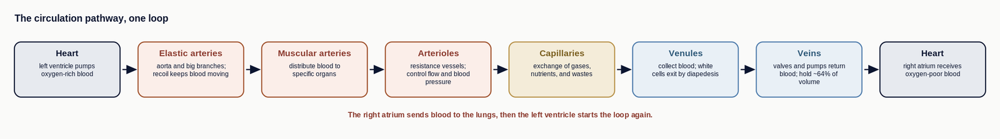
Part 1 · The wall
The three tunics
| Tunic | Position | Tissue |
|---|---|---|
| Tunica intima | Innermost | Endothelium on a basement membrane (the only layer a capillary has) |
| Tunica media | Middle | Smooth muscle and elastic fibers (thickest in arteries; sets the diameter) |
| Tunica externa | Outermost | Mostly collagen; anchors the vessel |

Part 1 · Arteries
Arteries, from elastic to arteriole
- Elastic arteries (the aorta and its big branches): elastic-rich walls stretch with each heartbeat and recoil between beats to keep blood moving.
- Muscular arteries: medium vessels that route blood to specific organs; their media is mostly smooth muscle.
- Arterioles: the smallest arteries and the gatekeepers of flow into capillary beds.
- Vasoconstriction (smooth muscle contracts, lumen narrows) and vasodilation (muscle relaxes, lumen widens) tune blood flow and pressure.

Part 1 · Capillaries
The three capillary types
| Type | Wall | Where |
|---|---|---|
| Continuous | Unbroken endothelium | Most common: muscle, skin, lungs, brain |
| Fenestrated | Small pores (fenestrations) | Fast absorption/filtration: kidney, small intestine |
| Sinusoid | Wide, with large gaps | Whole cells cross: liver, spleen, bone marrow |
A capillary bed is fed by one arteriole; precapillary sphincters open or close it, and a vascular shunt lets blood bypass when no exchange is needed.

Part 1 · Microcirculation
The capillary bed and precapillary sphincters
- A capillary bed is a network of 10 to 100 capillaries fed by a metarteriole that branches from a terminal arteriole.
- Precapillary sphincters, rings of smooth muscle at each capillary entrance, open or close to control flow into the bed.
- When tissue needs oxygen the sphincters open; when they close, blood runs through the thoroughfare channel straight to the venule, a vascular shunt that bypasses the bed.
- An arteriovenous anastomosis connects the arteriole directly to the venule, also bypassing the capillaries.

Part 1 · Veins
Veins and circulatory routes
- Venules drain capillaries and merge into veins. Because venous pressure is low, veins have valves and depend on the skeletal-muscle pump to move blood toward the heart.
- Anastomoses are connections between vessels that provide alternate routes; an arteriovenous anastomosis links an artery to a vein, bypassing capillaries.
- Portal systems send blood through two capillary beds in series before returning to the heart (for example, the hepatic portal system).

Part 2
When the Vessel Wall Fails
Most vessel disorders do one of three things: narrow the lumen, weaken the wall, or let blood pool.
Part 2 · Atherosclerosis
Atherosclerosis
- Healthy vessel: a smooth endothelial lining and a wall that can stretch and recoil. A vascular disorder narrows the lumen, weakens the wall, or lets blood pool.
- Atherosclerosis: fatty plaques build up within the walls of arteries. It is the root of heart attacks and strokes.
- Endothelial injury: damage to the smooth tunica intima lining, the starting point of a plaque.
- Atheroma (plaque): a deposit of fatty material, cells, and debris within the artery wall.
- Narrowed lumen: as the plaque grows it bulges inward, narrowing the channel and reducing flow.
- Arteriosclerosis: the general stiffening and thickening of artery walls; atherosclerosis is its most common form.
- Thrombus: a clot that can form on a roughened plaque and suddenly block the vessel.
Part 2 · Arteries
Arterial disorders
| Disorder | What it is | Why it matters |
|---|---|---|
| Aneurysm | a balloon-like bulge in a weakened artery wall | can rupture; common in the aorta and the arteries of the brain |
| Atherosclerosis | fatty plaque buildup that narrows an artery | the leading cause of coronary artery disease and stroke |
| Coronary artery disease | narrowing of the coronary arteries that supply the heart wall | can starve the myocardium and cause a heart attack |
| Peripheral artery disease | narrowing of the arteries of the limbs, usually the legs | causes pain on walking as the muscles are starved of blood |
| Hypertension | chronically high pressure within the arteries | strains the heart and damages vessel walls over time |
| Stroke | loss of blood supply to part of the brain, from a blocked or burst artery | brain tissue begins to die within minutes |
Part 2 · Veins
Venous disorders
| Disorder | What it is | Why it matters |
|---|---|---|
| Varicose veins | superficial veins that become twisted and swollen when their valves fail | blood pools and the veins bulge visibly, most often in the legs |
| Deep vein thrombosis | a blood clot in a deep vein, usually of the leg | the clot can break free and travel through the bloodstream |
| Pulmonary embolism | a clot, often from a deep vein, that lodges in an artery of the lung | a life-threatening emergency that blocks blood flow to the lung |
| Phlebitis | inflammation of a vein | causes pain, redness, and tenderness along the vein |
| Hemorrhoids | varicose veins of the rectal and anal region | a common cause of rectal discomfort and bleeding |
| Chronic venous insufficiency | long-term failure of the valves of the leg veins | persistent swelling and skin changes in the lower leg |
Part 3
The Fetal Detours
Before the lungs and liver are in use, the fetus gets its oxygen from the placenta and routes blood around the organs not yet working.
Part 3 · Overview
Fetal circulation, an overview
- Fetal circulation: the circulatory plan of a fetus, which gets its oxygen from the placenta rather than from its own lungs.
- The placenta is where fetal blood picks up oxygen and nutrients from the mother and gives up wastes. The umbilical cord carries the umbilical vessels between fetus and placenta.
- A shunt is a special vessel or opening that routes blood around an organ. The fetus uses three shunts to bypass the liver and the lungs.
- The lungs are bypassed (collapsed, not used for gas exchange). The liver is largely bypassed, since the placenta does the filtering.
Part 3 · Shunts
The fetal vessels and shunts
| Structure | What it is | What it does |
|---|---|---|
| Umbilical vein | a vein in the umbilical cord | carries oxygen-rich blood from the placenta to the fetus |
| Ductus venosus | a shunt passing through the fetal liver | lets most blood bypass the liver and flow toward the inferior vena cava |
| Foramen ovale | an opening in the interatrial septum | lets blood pass from the right atrium to the left atrium, bypassing the lungs |
| Ductus arteriosus | a short vessel between the pulmonary trunk and the aorta | shunts blood from the pulmonary trunk into the aorta, bypassing the lungs |
| Umbilical arteries | two arteries in the umbilical cord | carry oxygen-poor blood from the fetus back to the placenta |
Part 3 · After birth
The shunts after birth
| Fetal structure | Adult remnant | Note |
|---|---|---|
| Umbilical vein | ligamentum teres (round ligament of the liver) | runs in the free edge of the falciform ligament |
| Ductus venosus | ligamentum venosum | a fibrous cord on the inferior surface of the liver |
| Foramen ovale | fossa ovalis | a shallow oval depression in the interatrial septum |
| Ductus arteriosus | ligamentum arteriosum | a short cord between the pulmonary trunk and the aorta |
| Umbilical arteries | medial umbilical ligaments | paired cords on the inner surface of the anterior abdominal wall |
Part 4
Same Name, Three Jobs
Comparing artery, capillary, and vein side by side shows how wall structure follows function.
Part 4 · Compare & contrast
Artery vs capillary vs vein
| Feature | Artery | Capillary | Vein |
|---|---|---|---|
| Direction | Away from the heart | Between artery and vein | Toward the heart |
| Wall | Thick; muscular/elastic media | One layer (endothelium only) | Thin; wider lumen |
| Pressure | High | Low and falling | Low |
| Valves? | No | No | Yes (against backflow) |
| Job | Carry blood under pressure | Exchange with tissue | Return blood; act as a reservoir |
Part 5
Regional Vessels: Head & Neck, Upper Limb, Thorax
Trace the major arteries and veins of the upper body as branching maps. Tap any chart to enlarge.
Part 5 · Arteries
The aortic arch and its branches
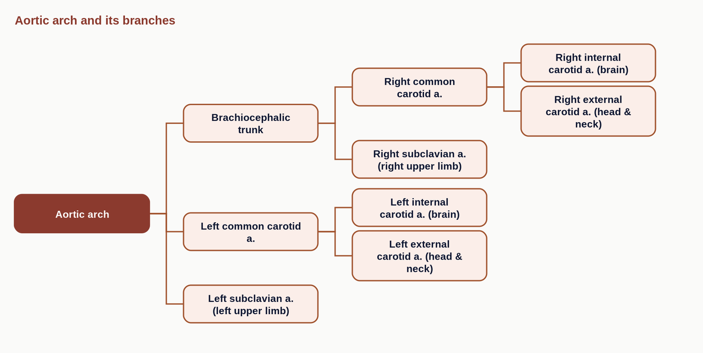
Part 5 · Arteries
The external carotid artery
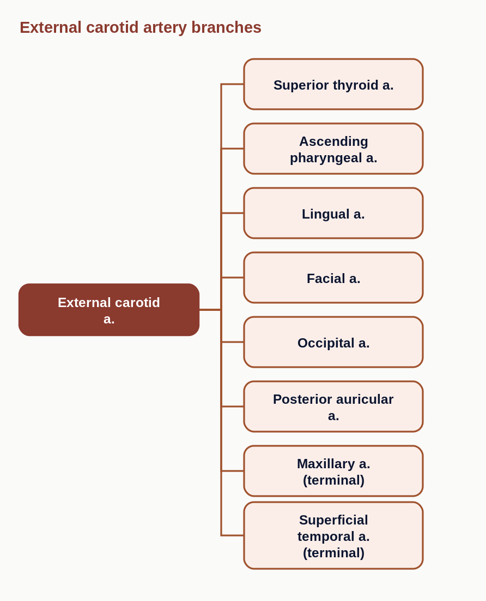
Part 5 · Arteries
Arteries of the upper limb
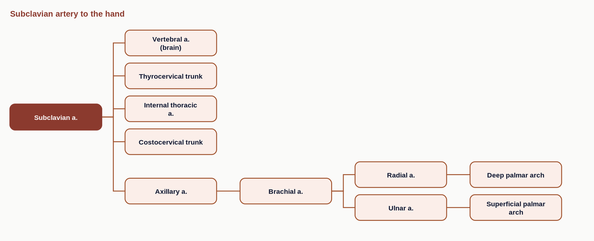
Part 5 · Veins
Veins draining to the superior vena cava
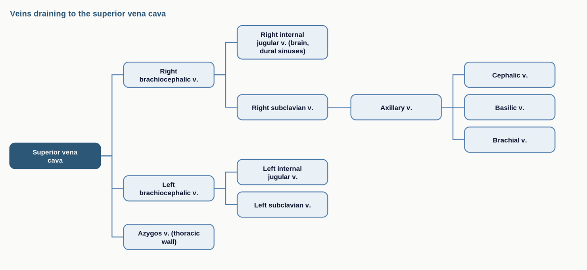
Part 6
Regional Vessels: Abdomen and Lower Limb
The abdominal aorta, the gut and portal drainage, and the vessels of the leg.
Part 6 · Arteries
The abdominal aorta and its branches
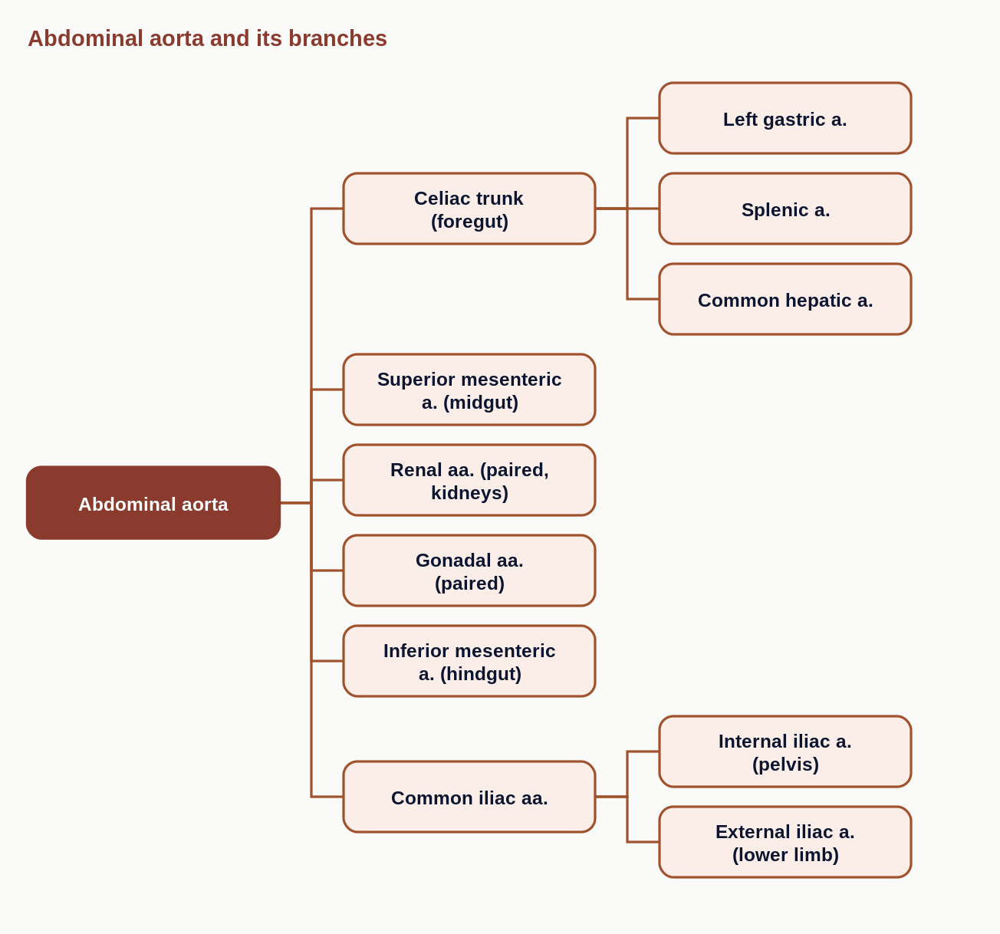
Part 6 · Arteries
Arteries of the lower limb
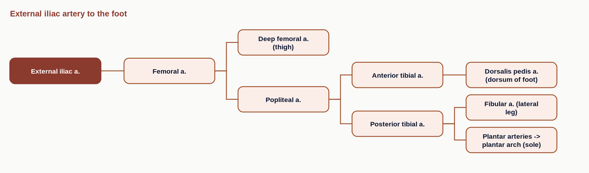
Part 6 · Veins
The hepatic portal system
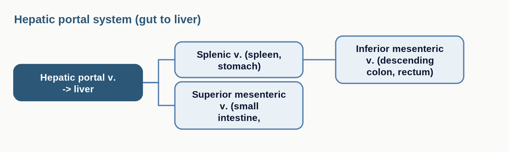
Part 6 · Veins
The inferior vena cava and lower limb veins
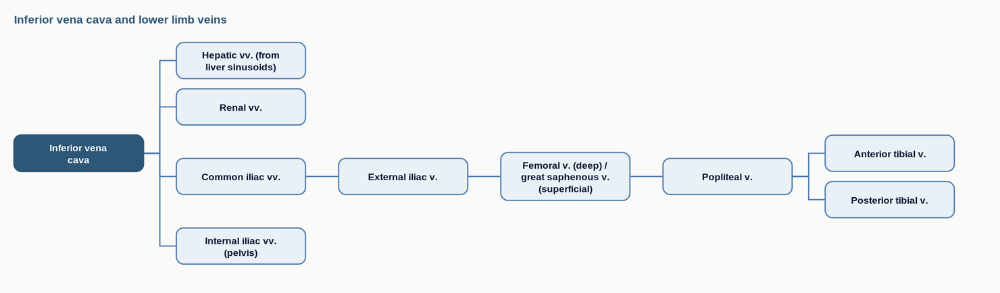
Part 7
Regional Vessels: Pelvis, Renal, and Reproductive
The internal iliac branches and the urogenital blood supply and drainage.
Part 7 · Arteries
The internal iliac artery
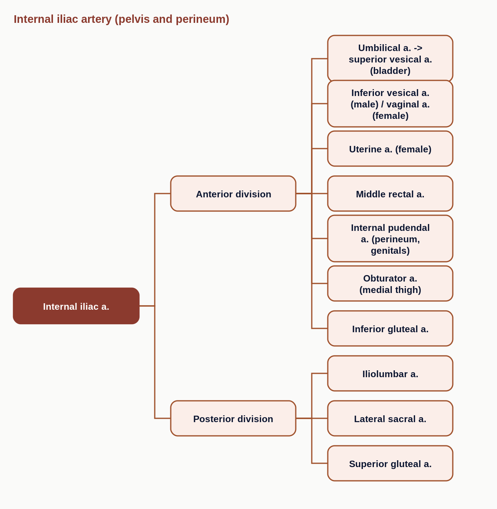
Part 7 · Arteries
Renal and gonadal arteries
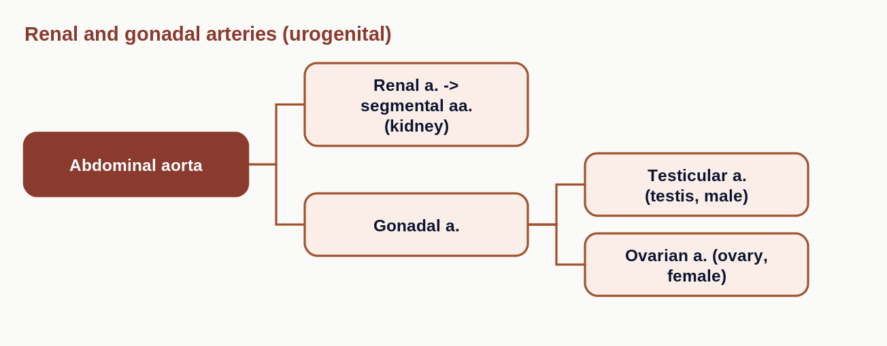
Part 7 · Veins
Renal and gonadal venous drainage
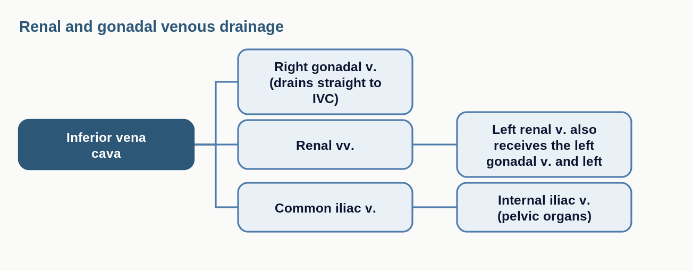
Wrap-up
Key takeaways
- Three tunics: intima (endothelium, the only capillary layer), media (smooth muscle/elastic, sets diameter), externa (collagen anchor).
- Sequence: artery -> arteriole -> capillary -> venule -> vein.
- Arteries: elastic, muscular, arteriole; capillaries: continuous, fenestrated, sinusoid.
- Veins run low-pressure, so they have valves and use the muscle pump.
- Same vessel name, built three ways, does three different jobs.
Keep studying